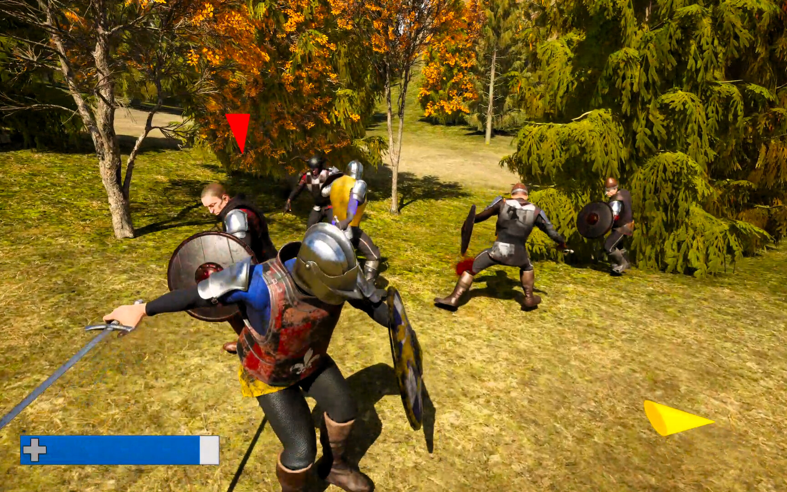
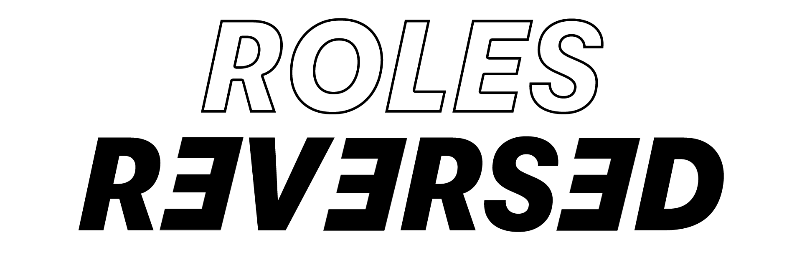
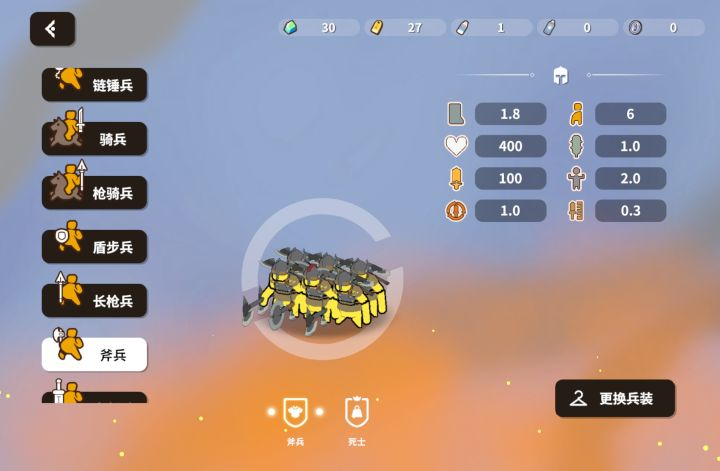

Everyone in the Castlesiege.io community argues about the best way to spend your hard-earned upgrade points. Some say you need to max out your weapon damage to melt enemy castles, while others swear by turtle builds that make your base literally unbreakable. I spent the last 48 hours grinding XP, testing every single stat allocation from basic sticks to maxed-out gear, and dying a lot. I’m not here to give you some wishy-washy 'it depends' answer. I tested the meta, I found the broken builds, and I’m going to tell you exactly which upgrade strategy dominates the medieval battlefield and which ones are a complete waste of your time. Let’s get into the rankings!

Castlesiege.io in action
At a Glance
Rank
Name
Key Stats
Verdict
#1
The Glass Cannon — The Castle Melter
Allocates 80% of points into Weapon Damage and Attack Rate, leaving Mo...
Incredible offense, but you'll lose your kingdom the se...
#2
The Iron Fortress — The Unbreakable Turtle
Dumps 90% of upgrade points into Castle Defense and Max Health, sacrif...
Your castle will never fall, but your boring playstyle ...
#3
The Speed Demon — The Hit-and-Run Raider
Prioritizes Movement Speed and Attack Rate, keeping Castle Defense low...
The most fun and chaotic build, but your fragile castle...
#4
The Immortal King — The Regen Tank
Focuses heavily on Health Regeneration and Max Health, creating a self...
The most reliable siege build, but you'll feel incredib...
The Contenders
The Glass Cannon — The Castle Melter
Allocates 80% of points into Weapon Damage and Attack Rate, leaving Movement Speed and Health at base levels. Focuses purely on outputting maximum damage per second to enemy structures.
✓ This build is an absolute nightmare for enemy castles. When you max out Weapon Damage and Attack Rate early, you can shred through rival fortresses in seconds. It shines in the mid-to-late game when you unlock powerful gear, allowing you to one-shot enemy kings who haven't upgraded their Castle Defense. If your goal is pure aggression and racking up massive XP by destroying bases, this is the way to go. You dictate the pace of the match, forcing enemies to react to your relentless sieges. It turns every castle into a ticking time bomb, and watching enemy health bars evaporate is incredibly satisfying.
✗ The moment you get caught out of position, you are completely dead. With base-level Max Health and zero Health Regeneration, a single engaged rival player will delete you in close combat. Furthermore, if you aggressively push an enemy castle and get stuck in their damage-over-time zone, you will melt before you can break their defenses. It completely neglects your own survival, meaning one bad engagement or a gank by a speedier opponent means you lose your kingdom. You have zero margin for error, and in a chaotic multiplayer arena, mistakes are guaranteed.
Incredible offense, but you'll lose your kingdom the second you make a single positioning mistake.
The Iron Fortress — The Unbreakable Turtle
Dumps 90% of upgrade points into Castle Defense and Max Health, sacrificing Weapon Damage and Movement Speed to create an impenetrable stronghold.
✓ This strategy is all about absolute map control through invulnerability. By maxing out Castle Defense and your personal Max Health, your base becomes a literal death trap for invading enemies. Rival players who try to siege you will take massive damage over time while your upgraded defenses chip away at them. It excels in the late game when multiple players are gunning for your throne. You can comfortably sit inside your walls, safely farming nearby chests for XP without ever risking a gank. It completely shuts down aggressive rush strategies, forcing enemies to waste their time and health trying to break through your impenetrable medieval walls.
✗ You are basically playing a waiting game, and your offensive output is pathetic. Because you neglected Weapon Damage and Attack Rate, your basic stick weapon feels like a wet noodle. Taking the fight to enemy castles takes forever, meaning you can't contest objectives or steal XP from rival bases. If an enemy realizes you're a turtle, they will just ignore you, farm the rest of the map, and out-level you. Eventually, their maxed-out gear will overpower your maxed-out defenses. You win the siege defense, but you slowly lose the war of attrition because you simply cannot kill anything fast enough.
Your castle will never fall, but your boring playstyle means you'll slowly lose the map to faster players.

How they stack up
The Speed Demon — The Hit-and-Run Raider
Prioritizes Movement Speed and Attack Rate, keeping Castle Defense low while using hit-and-run tactics to outmaneuver slower opponents across the arena.
✓ Mobility is king in Castlesiege.io, and this build weaponizes that fact. By maxing out Movement Speed alongside Attack Rate, you can dart across the battlefield, snipe enemy players, and escape before they can retaliate. It completely bypasses the damage-over-time trap of enemy castles because you are in and out before the siege damage can kill you. This build dominates the early and mid-game farming phase, allowing you to clear chests and steal XP from slower players effortlessly. If you get caught, your speed gives you the ultimate escape tool, making you incredibly hard to pin down in chaotic multiplayer skirmishes.
✗ While you can run away from almost anything, you lack the raw staying power to win prolonged fights. Your Max Health and Health Regeneration are left completely neglected, meaning if you get caught in a corner or surrounded by two players, you will be burst down instantly. Furthermore, your low Castle Defense means your own base is highly vulnerable to dedicated sieges. If you are busy raiding the other side of the map, a smart enemy will easily bulldoze your fragile walls. You trade base security for personal mobility, which is a risky gamble in a base-defense game.
The most fun and chaotic build, but your fragile castle will get destroyed while you're busy running around.
The Immortal King — The Regen Tank
Focuses heavily on Health Regeneration and Max Health, creating a self-sustaining powerhouse that can outlast enemy damage-over-time effects and survive prolonged brawls.
✓ This is the ultimate counter to the game's siege mechanics. Because invading an enemy castle damages you over time, maxing out Health Regeneration means you can literally stand inside a rival fortress and just out-heal the damage. You become an unstoppable siege engine that doesn't need to retreat to recover. In close-quarters combat, your massive health pool and constant regeneration make you a nightmare to kill, allowing you to absorb hits while steadily chipping away at enemy defenses. It’s the perfect balance of survivability and offensive pressure, letting you contest castles aggressively without the fear of being caught out of position and deleted.
✗ The main issue here is a severe lack of burst damage. Because you are pouring points into survivability, your Weapon Damage and Attack Rate will lag behind pure attackers. This means while you can survive inside an enemy castle for a long time, it will take you twice as long to actually destroy it. If you run into a Glass Cannon build, they might just out-damage your regeneration and kill you before you can kill them. You also have to be careful with your own castle, as your low Castle Defense leaves your base highly exposed to fast, aggressive raids.
The most reliable siege build, but you'll feel incredibly slow and under-armed against pure damage dealers.
The Rankings
#1 The Glass CannonRank 1 of 4
#2 The Iron FortressRank 2 of 4
#3 The Speed DemonRank 3 of 4
#4 The Immortal KingRank 4 of 4
Here is my definitive ranking from worst to best. At number four, we have the Iron Fortress. It’s completely overrated. Sitting in your base doing nothing is boring, and neglecting your offense means you just slowly lose the map while waiting to die. Number three is the Glass Cannon. It’s incredibly overrated for solo play. Sure, you melt castles, but the moment you get ganked, you’re dead. It requires perfect positioning, which is impossible in a chaotic io game. Number two is the Speed Demon. I love this build for pure fun and farming, but leaving your own castle completely undefended is a massive strategic flaw. Finally, at number one, the Immortal King takes the crown. It is the ultimate hidden gem. By focusing on Health Regeneration, you completely break the game's core siege mechanic, allowing you to outlast enemy castle defenses while remaining nearly unkillable in brawls. It offers the perfect blend of aggressive sieging and personal survivability without leaving your base completely helpless.
Who Should Pick What
If you're a beginner
Go Immortal King
Maxing Health Regeneration forgives your positioning mistakes. You can survive inside enemy castles and learn the map without constantly dying to siege damage or surprise ganks.
If you love aggression
Play the Speed Demon
Maxing Movement Speed lets you dictate the pace of the match. You can dart in, steal XP, and escape before enemies can react, keeping the action constantly high-octane.
If you play defensively
Try the Iron Fortress
While I rank it lower overall, maxing Castle Defense is perfect if you just want to relax. You can safely farm chests near your base and watch enemies fail to break in.

The final verdict in action
The Bottom Line
The Immortal King is objectively the best build in Castlesiege.io. While everyone else is busy either getting deleted as a Glass Cannon or boring themselves to tears as an Iron Fortress, the Regen Tank completely breaks the siege meta. By out-healing the enemy castle damage, you turn their strongest defensive tool into a minor inconvenience. It gives you the freedom to play aggressively without the constant fear of dying, making it the most consistent and dominant strategy in the game. Stop wasting your points on fragile speed builds or useless turtle builds. Max your regeneration, grab your gear, and go conquer the realm.